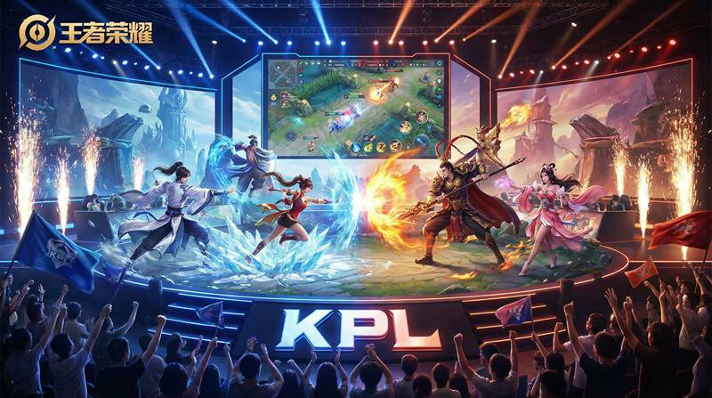

返回课程列表
第一课
绪论
游戏物理引擎与MOBA中的力学
⏱️ 约30分钟
王者荣耀虽然是2D俯视角MOBA游戏，但其底层运行着复杂的物理引擎。英雄移动、技能碰撞、弹道计算——每一帧都在进行力学运算。
游戏物理引擎基础
游戏物理引擎负责模拟物体的运动和碰撞。王者荣耀使用简化的2D物理模型，每秒进行30-60次物理计算，确保游戏流畅运行。

王者荣耀中的物理系统
游戏中的力学元素：
- 碰撞检测：英雄与墙壁、小兵、野怪的碰撞使用圆形碰撞体
- 弹道计算：鲁班七号的子弹、后羿的箭矢都有独立的弹道轨迹
- 位移计算：闪现、冲锋等位移技能需要计算起点到终点的路径
- 视野系统：草丛视野基于射线检测，类似光学中的遮挡原理
MOBA游戏的力学思维
理论力学的思维方式可以帮助理解游戏机制。力的平衡对应阵容平衡，运动学对应走位技巧，动力学对应伤害计算。
用力学思维理解游戏
理论力学三分支的游戏对应：
- 静力学→阵容平衡：坦克、法师、射手、辅助的配比如同力的平衡
- 运动学→走位预判：预判敌人移动轨迹，提前释放技能
- 动力学→伤害机制：攻击力×技能倍率-防御减免=实际伤害
- 能量守恒→资源管理：蓝量、血量、经济的合理分配